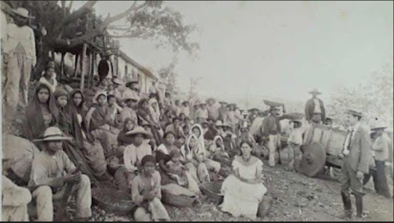

La cultura de un pueblo a el cual se le arrebató.
- junio 14, 2026
La cultura salvadoreña no se perdió por falta de identidad, sino por acontecimientos históricos que obligaron a muchas personas a ocultar sus raíces. Aún hoy, las huellas de ese silencio siguen influyendo en la forma en que el país expresa su riqueza cultural.

Insurreción Campesina El Salvador 1932.
Nota. Tomada de Jiménez (2024), El Diario de Hoy.
¿Alguna vez te has preguntado por qué El Salvador, en comparación con otros territorios cercanos, parece tener una identidad cultural menos visible o menos marcada? Esta es una pregunta que va más allá de las tradiciones, la gastronomía o las costumbres que posee; es una pregunta que nos invita a reflexionar y analizar sobre nuestra historia y sobre aquellos acontecimientos que moldearon la forma en que una sociedad se percibe a sí misma. Para comprender esta triste realidad, es necesario remontarse a uno de los períodos más complejos y trascendentales de la historia salvadoreña: el Martinato.
Entre 1929 y 1944, El Salvador atravesó profundas dificultades sociales, económicas y políticas. Durante el gobierno del presidente Arturo Araujo, el país sufrió las consecuencias de la Gran Depresión, una crisis económica mundial que provocó la caída de los precios internacionales. Debido a que la economía salvadoreña dependía en gran medida de la exportación del café, el impacto fue devastador para miles de familias que ya vivían en condiciones precarias.
En medio de este escenario de incertidumbre y descontento, el 2 de diciembre de 1931 un grupo de militares llevó a cabo un golpe de Estado que derrocó al presidente Arturo Araujo. Fue entonces cuando Maximiliano Hernández Martínez asumió el poder empezando así el periodo conocido como el Martinato. Lo que siguió no fue solamente un cambio de gobierno, sino el inicio de una etapa que transformaría profundamente la historia y la memoria colectiva de los salvadoreños.
El Martinato es recordado como un período de fuerte represión y control político, concentración del poder y limitación de las libertades individuales. Sin embargo, sus consecuencias fueron más allá de lo político. En ocasiones, los hechos históricos no solo modifican las instituciones de un país; también transforman la manera en que las personas viven, piensan y expresan su identidad. Cuando el miedo se instala en una sociedad, este no solo afecta las acciones de las personas, sino también aquello que se atreven a mostrar sobre quiénes son.
El descontento social de la época creció especialmente entre las comunidades indígenas y campesinas, quienes enfrentaban condiciones de desigualdad, despojo de tierras y exclusión económica. Como resultado de estas tensiones, en 1932 ocurrió la Insurrección Campesina, un levantamiento impulsado por quienes buscaban mejores condiciones de vida y una respuesta a las injusticias que sufrían. La reacción del gobierno fue una represión brutal que dejó miles de víctimas y una huella imborrable en la historia nacional.
Sin embargo, las consecuencias de estos acontecimientos no pueden medirse únicamente por el número de vidas perdidas (indígenas y campesinos). También deben entenderse a través de aquello que dejó de verse y de escucharse. Muchas personas comenzaron a ocultar sus raíces indígenas, abandonaron sus lenguas, dejaron de utilizar ciertas vestimentas tradicionales y evitaron manifestar costumbres que pudieran relacionarlas con los grupos perseguidos. La supervivencia exigió silencio, y ese silencio terminó afectando una parte importante de la identidad cultural salvadoreña.
Quizás la verdadera tragedia no fue únicamente la violencia de aquellos años, sino el hecho de que generaciones enteras aprendieran que expresar quiénes eran podía representar un peligro. Cuando una cultura se ve obligada a esconderse, no desaparece de inmediato; permanece viva, pero en la sombra, transmitiéndose de forma discreta entre familias y comunidades.
Por eso, al reflexionar sobre la cultura salvadoreña, la pregunta no debería ser por qué parece menos visible que la de otros pueblos. Tal vez la pregunta correcta sea cuánto de esa cultura fue silenciada por el miedo y cuánto de ella aún permanece esperando ser redescubierta. Después de todo, una nación no pierde su identidad de un día para otro; la pierde cuando sus habitantes dejan de sentirse libres para mostrarla. Y quizá el mayor desafío de El Salvador no sea recuperar una cultura perdida, sino volver a escuchar las voces que durante tanto tiempo fueron obligadas a callar por temor.
Quizás ha llegado el momento de volver la mirada hacia nuestras raíces y escuchar aquellas voces que el tiempo y el miedo intentaron silenciar. La cultura de un pueblo nunca desaparece por completo; permanece viva en su memoria, esperando ser reconocida. Depende de nosotros rescatarla, abrazarla y transmitirla, para que las generaciones futuras no hereden el silencio, sino el orgullo de saber quiénes son y de dónde vienen.
Bibliografía
Audiovisuales UCA. (7 de marzo de 2022). Memoria de vida: Lucha por la tierra (I). Obtenido de Noticias UCA:
https://noticias.uca.edu.sv/videos/memoria-de-vida-lucha-por-la-tierra-i
Lara-Martínez, R. (2011). Política de la cultura del martinato. Obtenido de Universidad Don Bosco:
https://www.udb.edu.sv/editorial/pdf/es/coleccioninvestigacion/seriebicentenario/politica-de-la-cultura-del-martinato.pdf
Ruíz, I. C. (29 de Julio de 2021). El Martinato y la insurrección de 1932: mitos y verdades a medias. Obtenido de Revista Nuestro Tiempo:
https://revistanuestrotiempo.uls.edu.sv/wp-content/uploads/2023/06/El-Martinato-y-la-insurreccion-de-1932-mitos-y-verdades-a-medias-v1.pdf
Jiménez, A. (11 de Agosto de 2024). ¿Qué sucedio con los indígenas tras la insurreción de 1932? Obtenido de El Diario de Hoy:
https://www.elsalvador.com/h-entretenimiento/h-cultura/cultura-que-sucedio-con-los-indigenas-despues-de-insurreccion-1932-el-salvador/1161280/2024/